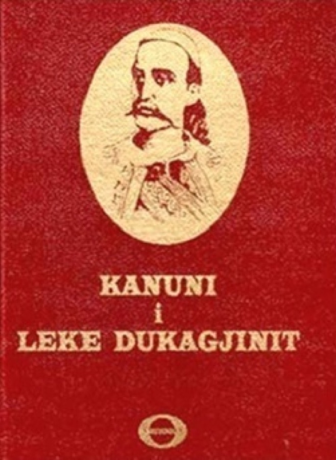
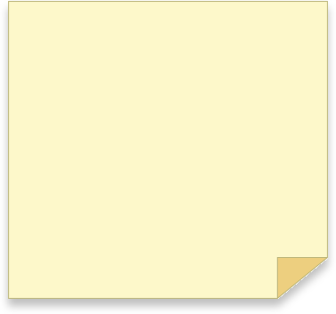
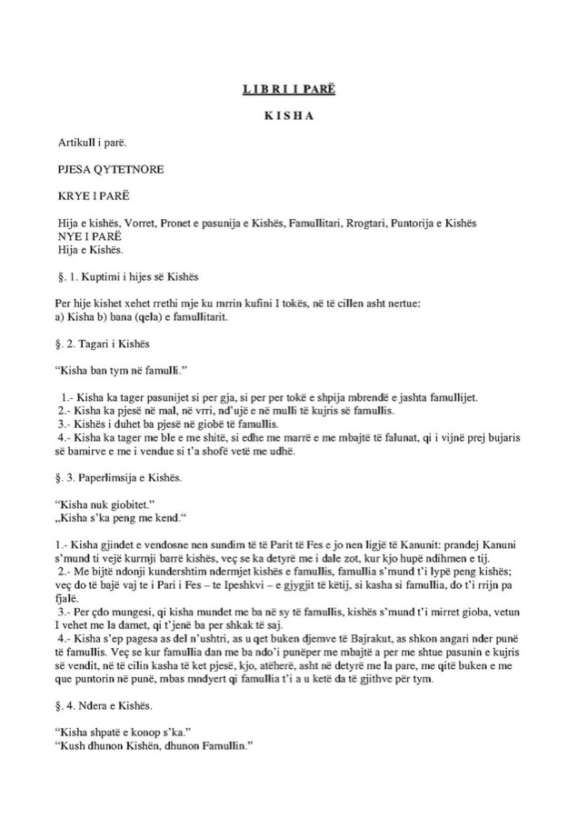

Anis Slimani
Inter-disciplinary Creative
KANUN: Controlling Communities is a documentary exploring the 500-year-old Kanun of Lek Dukagjin, an archaic and violent moral code still followed by some rural communities in Albania.



The film investigates the social and cultural impact of this outdated tradition and its continued influence today. Using audiovisual research tools, it combines footage and audio edited in Adobe Premiere Pro and Audition into a narrative that examines the legacy and repercussions of the Kanun in contemporary Albanian society.
KANUN: Controlling Communities is a documentary exploring the 500-year-old Kanun of Lek Dukagjin, an archaic and violent moral code still followed by some rural communities in Albania.
The film investigates the social and cultural impact of this outdated tradition and its continued influence today. Using audiovisual research tools, it combines footage and audio edited in Adobe Premiere Pro and Audition into a narrative that examines the legacy and repercussions of the Kanun in contemporary Albanian society.